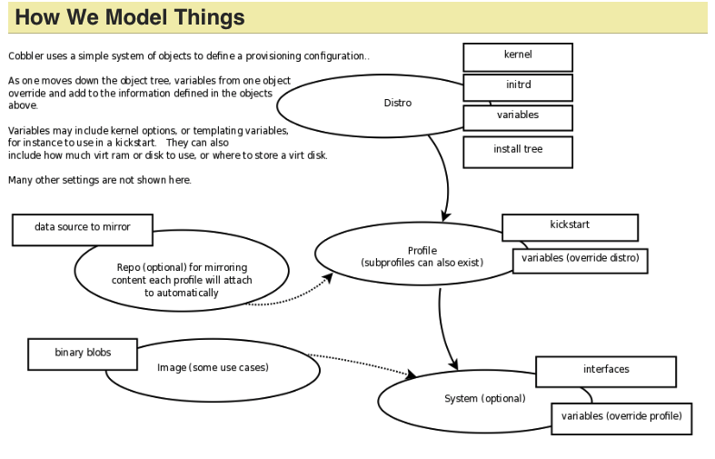

cobbler的使用.
目标
根据MAC地址唯一标识一台主机。输入网络信息（IP、掩码、网关、DNS、主机名）和用户信息（用户名、密码、公钥），自动创建操作系统。
Cobbler
本节部分翻译自cobbler manuals
简介
Cobbler [ˈkɔblə]可以实现自动安装操作系统，支持自动安装Redhat系列和Debian系列的操作系统。
批量安装操作系统是一项重复的工作，Cobbler可以把我们从重复的劳动中解放出来。

图1. Cobbler 模型图
概念
distro
代表一个发行版（distribution），比如CentOS6、CentOS7、Ubuntu16、RedHat7就是不同的发行版；一般不同的distro对应不同的发行版的ISO文件。
profile
一个profile和一个distro关联，并给distro提供附加的特殊选项。profile更像一个role的概念，比如一个profile表示web server，另一个profile表示桌面系统。
system
system记录了硬件配置和profile的映射关系。就好像为某个硬件选择了一个profile。
repo
安装
概念
1.Cobbler原语
使用
libvirt
vt-standalone
目标
做一个单机的虚拟化系统
需求
用户管理
添加用户
删除用户
修改用户
登录
虚拟机管理
查看所有虚拟机
创建虚拟机
删除虚拟机
VNC管理（用户需要登录认证）